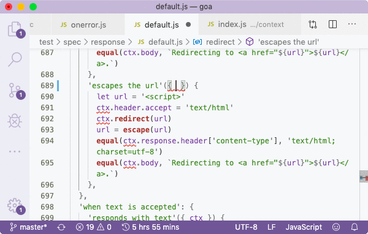
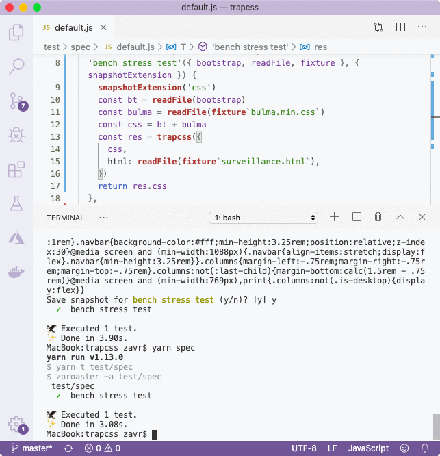
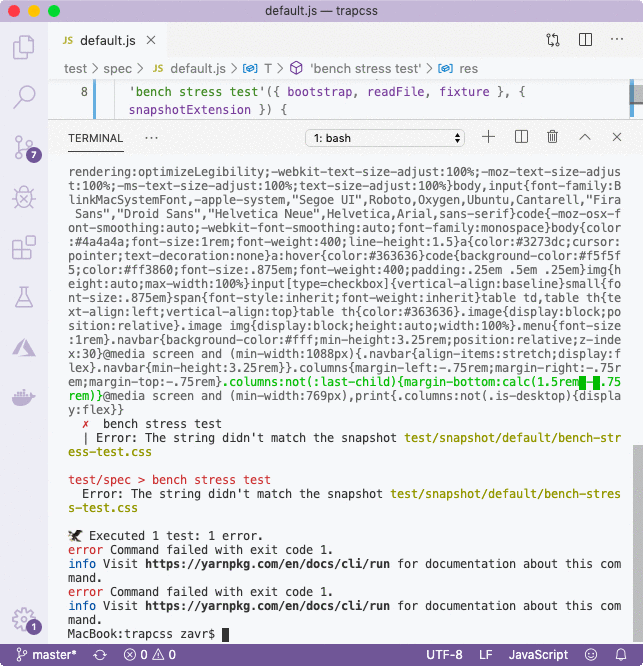

###! Context Testing
Overall, when executing new tests, we get the following report:
```bash
$ zoroaster -a test/mask/default.js
test/mask/default.js
@keyframes
✓ drops all
✓ drops pulse, nudge
✓ drops bop
✓ retains nudge
@font-face
✓ retains if used
✓ retains if used (shorthand)
✓ drop if unused
✓ drops if unused (multiple defs)
@font-face (custom props)
✓ drops if unused --font-family: should not be confused with font use
✓ retains if used in font-family
✓ retains if used - deep resolve
✓ drop if unused - deep resolve
customProps
✓ does not confuse BEM -- classes with custom props
alternate
div{text-decoration: underline;⏎
/* @alternate */⏎
text-decoration: underline dotted;}
✗ keeps the alternate comment
| Error: 'div{text-decoration: underline;text-decoration: underline dotted;}' == 'div{text-decoration: underline;\n /* @alternate */\n text-decoration: underline dotted;}'
| at keeps the alternate comment (test/result/alternate.scss:1:1)
test/mask/default.js > alternate > keeps the alternate comment
Error: 'div{text-decoration: underline;text-decoration: underline dotted;}' == 'div{text-decoration: underline;\n /* @alternate */\n text-decoration: underline dotted;}'
at keeps the alternate comment (test/result/alternate.scss:1:1)
🦅 Executed 14 tests: 1 error.
```
The last error is due to the fact that the new functionality has not been implemented. But it's OK since it's in spirit of test-driven development: we added a test first, before the source code. With mask testing, the TDD methodology is easily embraced as test cases are very easy to add by simply providing new data. Instead of wasting our time on setting up test routines in JS, we can try to come up with as many use cases via masks.
_DropCSS_ contains more tests, but for the purposes of the tutorial we don't need to look at them further, except for the integration test.
```js
describe('Bulma-Bootstrap-Surveillance', () => {
let html, css;
describe('stress test', () => {
it('should run', function() {
let {css: out} = dropcss({
html: fs.readFileSync(__dirname + '/../bench/stress/input/surveillance.html', 'utf8'),
css: fs.readFileSync(__dirname + '/../bench/stress/input/bootstrap.min.css', 'utf8') +
fs.readFileSync(__dirname + '/../bench/stress/input/bulma.min.css', 'utf8'),
});
assert.equal(vkbeautify(out), fs.readFileSync(__dirname + '/../bench/stress/output/dropcss.pretty.css', 'utf8'));
});
});
});
```
We're going to write it as a spec, that will *return* the result of the call to `trapcss` function, since _Zoroaster_ supports snapshots automatically by recording returned values in the `test/snapshot` directory, and then comparing all future returned values with the saved one. This is what our spec looks like:
```js
// test/spec/default.js
import ServiceContext from 'zoroaster'
import Context from '../context'
import trapcss from '../../src'
/** @type {Object.} */
const T = {
context: [Context, ServiceContext],
'bench stress test'({ bootstrap, readFile, fixture }, { snapshotExtension }) {
snapshotExtension('css')
const bt = readFile(bootstrap)
const bulma = readFile(fixture`bulma.min.css`)
const css = bt + bulma
const res = trapcss({
css,
html: readFile(fixture`surveillance.html`),
})
return res.css
},
}
export default T
```
_Zoroaster_ is a *context-testing* framework. _Contexts_ are a way to unload test utilities, such as methods for reading files, from tests suites, by putting them in a single place called a context, and make them accessible via destructuring from each test case. In addition, instances of test contexts can implement `_init` and `_destroy` methods so it's an alternative to `beforeEach` and `afterEach` hooks for functional style programming, since each test case is now a pure function that receives testing API from arguments rather than scope. This allows to organise test suites by files instead of cramming them all into the same file because we relied on some complex set up routine that we don't want to copy/paste in each test suite file. In _DropCSS_ we only relied on simple methods like `readFileSync` but in more complex software we might have more sophisticated API, e.g., in [koa/session](https://github.com/koajs/session/blob/master/test/contextstore.test.js):
```js
/* 750 lines of tests */
function App(options) {
const app = new Koa();
app.keys = [ 'a', 'b' ];
options = options || {};
options.ContextStore = ContextStore;
options.genid = ctx => {
const sid = Date.now() + '_suffix';
ctx.state.sid = sid;
return sid;
};
app.use(session(options, app));
return app;
}
```
The _App_ function is used by each single test, the test suite file is large because they are all tied to this testing API. There could be a separate file that exported this function, like it's done in Koa (`test/helpers/context.js`):
_Koa_ then requires those helpers whenever it needs to in [test suites](https://github.com/koajs/koa/blob/54e8fab3e3d907bbb264caf3e28a24773d0d6fdb/test/response/redirect.js):
Again, those are the simplest examples when the helpers don't take part in set up routines, for example starting a mock server. If they were, each test would be tied up to the test suite file's scope which would force us to place all test in the same file which is not very convenient for navigation and developer freedom. The previous example also adds the `escape` function at the bottom of the file, to be used by specs in there. But what if it was needed in other test suites, too? It would have to be put in the `helpers/context`, and that's exactly what *Contexts* are in _Zoroaster_ — an official place for your testing utilities (we didn't see Koa's code before coming up with the name, it's an accident that their context is called in the same fashion as a testing context).
This is a snippet from Goa's (our compiled Koa fork) context:
Our context extends the `@contexts/http/cookies` class, that initialises a web-server when `startPlain` method is called and returns a tester instance for making requests to it and asserting on the results, `supertest` style. There's also a possibility set _PersistentContexts_ that act as global ``before`` and ``after`` hooks, but practice shows that it takes only a few ms to start a server therefore it's OK to use a normal context. When [integration-testing](https://github.com/art-deco/akashic.page/blob/3995c1be755de1ff6de665ee5afc7d1b7cce0c53/test/context/index.js#L7) larger apps and needing to run [background processes](https://github.com/dpck/form/blob/aa9d5137ca5535e46d8c71056c03e81ab2ff4da7/test/context/RemoteChrome.js#L4), like headless Chrome, we would definitely be able to use a persistent context. Persistent contexts are actually the best feature to illustrate advantages of context-testing, as they allow to move the setup and teardown logic into separate files, instead of rewriting it over and over again in the ``before`` and ``after`` hooks, or cramming all test suites in the same file.
```js
{
context: Context,
async 'sets status code'({ app, startPlain }) {
app.use((ctx) => {
ctx.status = 204
})
await startPlain(app.callback())
.get('/')
.assert(204)
},
}
```
The additional advantage lies in the fact that we implement our own testing API on top of existing one. It is then from the context that specs access testing utilities, and what is more, we receive full _JSDoc_ support for our context's API. Any number of contexts can be passed to test suites.

Context-testing decouples test cases from the testing infrastructure and allows to treat each test as a pure function that receives its inputs from arguments instead of file scope.
Of course, test cases are not 100% pure as we're still importing src within the test suite, but it's OK since we still want to be practical. It would be possible to import src from context, and make it available for access by test cases, in which case they _will_ be 100% pure. This could let us to do cool stuff like hosting spec functions completely independently from the source code (e.g., as lambdas for longer integration testing routines that could then be run in parallel to complete a test suite in a matter of seconds), and even plugging in different versions of source code into tests. But these are more advanced concepts from Quality Assurance theory. For now it's enough to say that context-testing from _NodeTools_ formalises the helper pattern and enables _JSDoc_ access to testing API.
This is our context for that spec:
```js
import { join } from 'path'
import { readFileSync } from 'fs'
/**
* A testing context for the package.
*/
export default class Context {
/**
* A tagged template that returns the relative path
* to the fixture.
* @param {string} file
* @example
* fixture`input.txt` // -> test/fixture/input.txt
*/
fixture(file) {
const f = file.raw[0]
return join('test/fixture', f)
}
/**
* Path to bootstrap.
*/
get bootstrap() {
return this.fixture`bootstrap.min.css`
}
/**
* Read the file from the fs.
* @param {string} path The path to read.
*/
readFile(path) {
return readFileSync(path, 'utf8')
}
}
```
The testing interface and its implementation provide a method for synchronously reading files, a method to resolve paths to fixtures from the *fixture* directory, as well as the *bootstrap* property that resolves to the bootstrap path. We'll need to place some fixtures, such as *bulma.min.css* and *surveillance.html* into the *fixtures* folder so that they can be used in test. If we ever wanted to reuse bootstrap fixture, we'd simply destructure its path from the context, and read it if necessary. But if our package could, for example, accept a path to a CSS file instead of CSS as string, we'd already have everything we needed to test such feature. This makes us extremely productive and our QA experience very pleasant.
The spec will read bulma and bootstrap, put them together, and use HTML from the prepared html file to pass to _TrapCSS_. The result is returned by the test, and when run for the first time, _Zoroaster_ asks us if we want to save the snapshot. After it was saved, all further executions of the test will compare the output to the recorded one.

We also used a service context from _Zoroaster_ as our second context to change the format of the saved file to CSS. Instead of recording snapshots in JSON files, we write them to files with the extensions of the data format that they contain. This allows us to visually inspect our snapshots with syntax highlighting, which improves our _DevX_ too.

If at some point we changed our source code, and the output of the program changed, we'd be notified of it by _Zoroaster_ with green/red highlighting on string differences too. We could then run tests in interactive mode as (same as forks) to update snapshots from the CLI.
In sum, there are following folders found in the *test* dir:
- *context*: our helper methods implemented as a class for _JSDoc_ access to methods.
- *fixture*: any external files required for testing.
- *mask*: test suites created with _makeTestSuite_ from ``@zoroaster/mask`` package that are constructed dynamically from input-output pairs.
- *result*: test cases for masks that provide inputs and expected outputs, stored in any convenient file format that provides appropriate syntax highlighting.
- *snapshot*: results returned by specs are saved here.
- *spec*: atomic test cases nested within folders and thus organised by tests suites that make use of contexts.